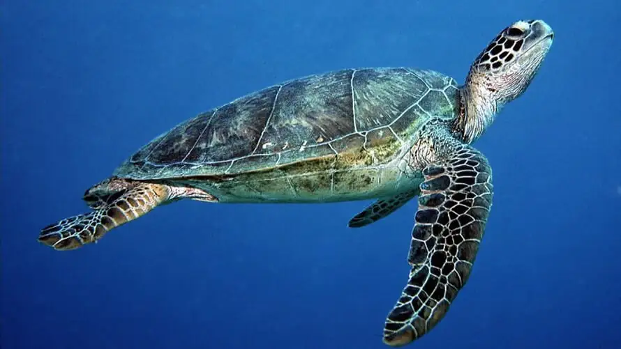
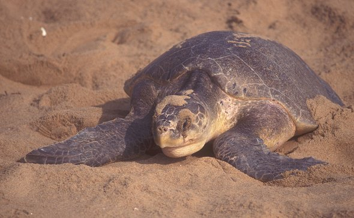
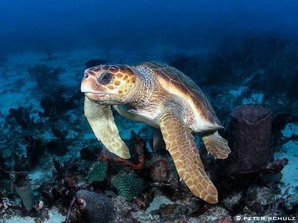

Green Turtle
Green Turtles are a common sight in Sri Lanka, with populations found along the west and south coasts of the island. These turtles prefer seagrass beds and coral reefs, where they feed on algae and seagrass. The turtles are known for their green-colored shell and can weigh up to 200kg. The best places to see Green Turtles in Sri Lanka are at the Rekawa, Kosgoda, and Induruwa beaches.
Main beach where the green turtle is found
Olive Ridley Turtle
The Olive Ridley Turtle is the most abundant species of sea turtle in the world, and Sri Lanka is no exception. These turtles nest along the west and south coasts of Sri Lanka, with the highest densities found at the Rekawa, Kalametiya, and Kosgoda beaches. The turtles are known for their synchronized nesting, where thousands of turtles come ashore at the same time to lay their eggs. These turtles typically weigh between 35-50kg and are recognized by their olive-colored shell.
Main beach where the Olive Ridley turtle is found
Hawksbill Turtle

Hawksbill Turtles are a critically endangered species, and Sri Lanka is one of the few places in the world where they can still be found. These turtles are known for their unique, curved beaks and beautiful, marbled shells. They are typically found near coral reefs, where they feed on sponges and other invertebrates. The best places to see Hawksbill Turtles in Sri Lanka are at the Kosgoda and Induruwa beaches.
Main beach where the Hawksbill turtle is found
Leatherback Turtle

Leatherback Turtles are the largest species of sea turtle in the world, with some individuals weighing over 900kg. These turtles are found in Sri Lanka but are extremely rare. They are known for their unique, leathery shells, which lack the hard scutes found on other turtle species. Leatherback Turtles are typically found in deeper waters, where they feed on jellyfish.
Main beach where the Leatherback turtle is found
Loggerhead Turtle
Loggerhead Turtles are a rare sight in Sri Lanka, but they can still be found along the island's east coast. These turtles are known for their large head and powerful jaws, which they use to feed on hard-shelled prey like crabs and lobsters. Loggerhead Turtles can weigh up to 250kg and are recognized by their reddish-brown shells.